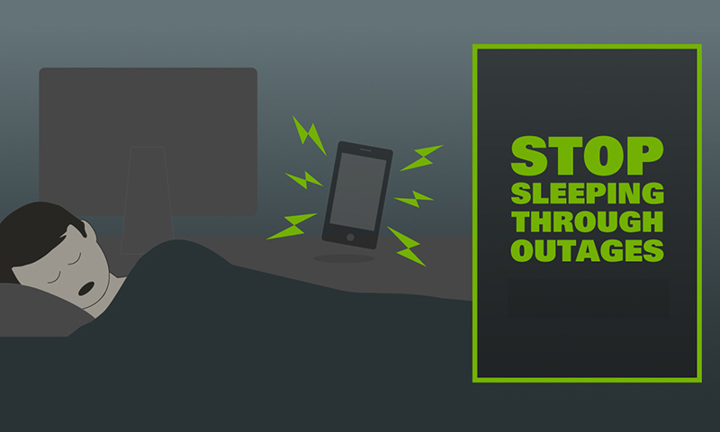
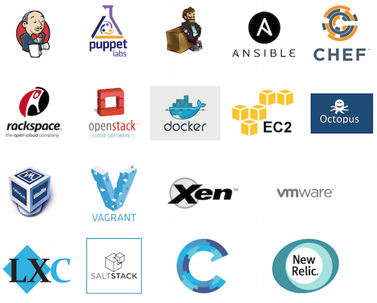
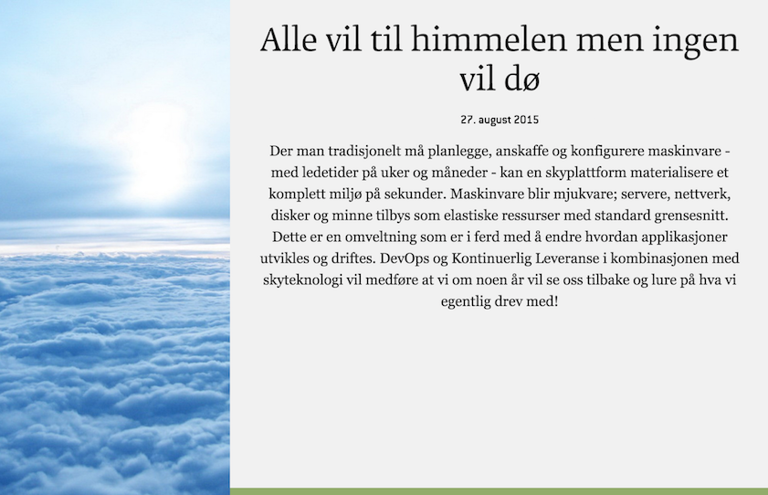

Levere team som kan gjøre
utvikling, drift og forvaltning
i Nettskyen.
Utvikling
Developers carry beepers

Drift
Tools, tools og mere tools

Titt fram om du kan dette!

Forvaltning
Sky
It's the future baby

Hvem er vi?
Hva har vi jobbet med så langt?
Juridiske rammebetingelser
Salgspresentasjon
Finne kunde-case/leads
Begynt å blogge
Rekruttering
Hva skal vi jobbe med fremover?
De første prosjektene i løpet av høsten
Flere større kunder i løpet av det første året
Mer blogging
Kartlegge DevOps i BEKK
Identifisere kompetansebehov
Lære mer om skytjester i verden og i Norge
Få med flere folk
Finne referanser hos kunder
Få med hele BEKK
Fremdriftsplan